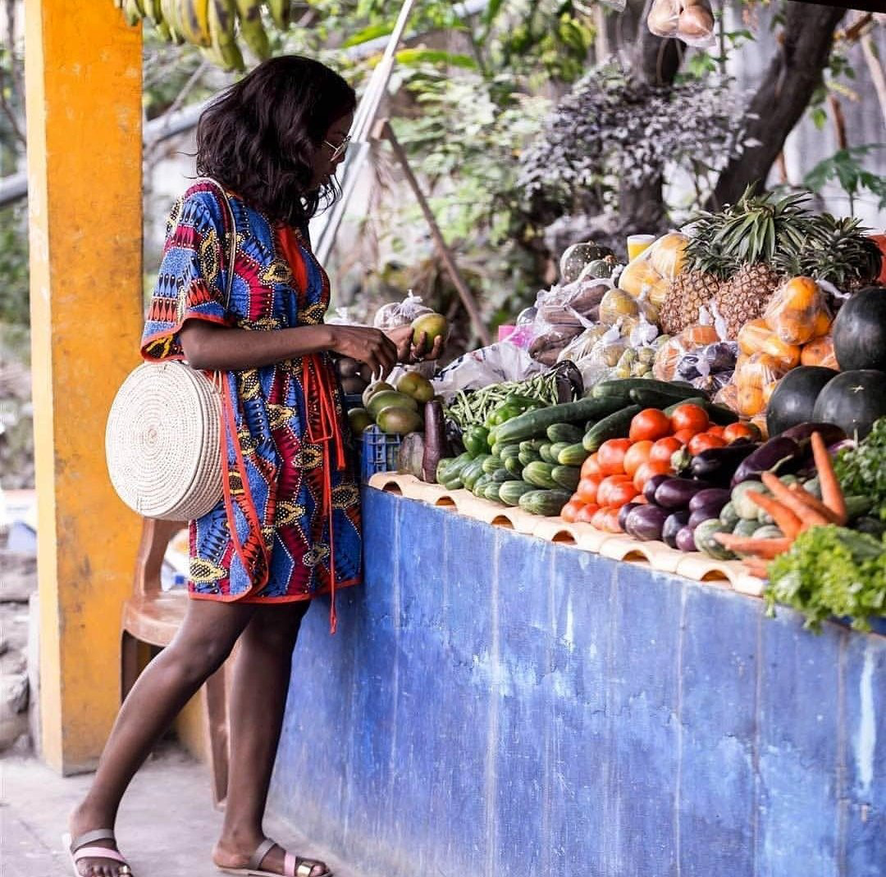

About Us
Welcome to DRCTreasures

At DRCTreasures, we are your gateway to exploring the vibrant culture of the Democratic Republic of the Congo. Each month, we introduce you to new treasures DRC has to offer. Whether you’re a member of the diaspora or simply curious about our heritage, we provide a comprehensive roadmap to all things DRC.
From the captivating rhythms of our extensive musical history to the exquisite flavors of Congolese cuisine, and the rich tapestry of our art culture, we invite you to discover the treasures that the DRC has to offer. Join us on this journey and experience the heart and soul of our beloved country.